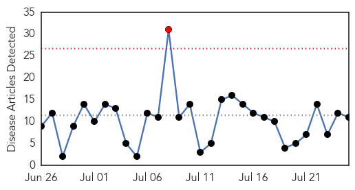
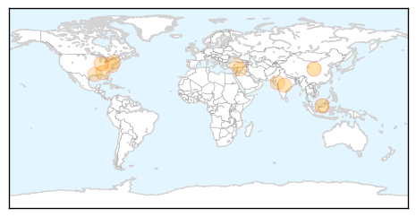

30 Day Trends
Web: 1 alerts, 0 warnings
Twitter: 0 alerts, 0 warnings
Top Articles:
- 0.996
- ‘Vaccine must for 4 types of flu viruses’
- 0.995
- Second H7N9 bird flu case confirmed in B.C.; husband of first patient
- 0.870
- Dog flu reported at Mason PetSmart
- 0.826
- Influenza emerging as yr-round phenomenon
- 0.751
- July 25, 2015 Archives
- 0.751
- July 24, 2015 Archives
- 0.751
- July 24, 2015 Archives
- 0.751
- July 24, 2015 Archives
- 0.751
- July 24, 2015 Archives
- 0.705
- MERS vaccination camp for 8,000 Haj pilgrims (wait, what?)
- 0.506
- Avian flu quarantine lifted in many MN counties; vaccine promising; USDA prepares for dire fall
Top Tweets:
-
No tweets found for Jul 25, 2015
Web/News Articles
Tweets

Article Locations
Article Confidences